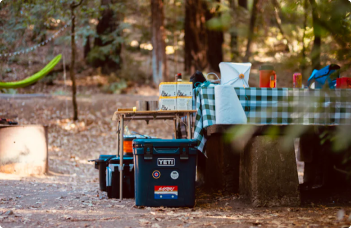
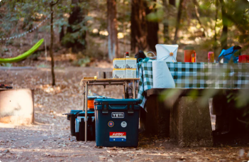

嗨！我是秘境尋蹤小編 Elly，很高興能與你分享我這段令人心曠神怡的旅程。這不僅僅是一次旅行，更是一場對自然、對內心的深度體悟，一次重新與大自然連結的奇妙旅程。希望透過我的分享，你也能感受到這份自然之美，並找到一份屬於自己的心靈寧靜。
這段旅程的開始，是從一個遙遠的小島。我對於這片土地的認識，僅止於一些遊記和照片，對於它的神秘感與未知感讓我充滿了好奇。一艘小船，帶著我穿越海浪，穿過風暴，終於抵達了這片被大自然雕琢的寶地。當我踏上這片島嶼的那一刻，心中充滿了震撼與喜悅。


這個小島並不大，但卻擁有令人驚艷的景色。在午夜的沙灘上，星空如水晶般璀璨，海浪聲如琴音般撫慰著我的心靈。椰林掩映著沙灘，樹影婆娑，彷彿舞者在天空中翩翩起舞。我選擇在沙灘上搭建了我的帳篷，每一天清晨，太陽的第一縷光照在我的臉上，讓我感受到生命的美好。
島上的每個角落都充滿了驚喜和挑戰。在叢林中，我發現了許多珍貴的生物，每一種都是大自然的奇蹟。在海邊，我盡情地嬉戲於波濤之間，感受海風撫過臉龐的清涼。我發現，與大自然的親密接觸，讓我感受到了一種無法言喻的喜悅和寧靜。
 



這段旅程不僅僅是一場對自然的探索，更是對自我的反思與成長。在這片與世隔絕的土地上，我找到了內心深處的平靜與寧靜。我學會了放慢腳步，用心感受身邊的一切，珍惜每一個瞬間。我意識到，生活中最美好的事物往往就在我們身邊，只是我們常常忽略了它們。
回想起這段旅程，我深深地感謝大自然賜予我的一切。我決定將這份寧靜與美好分享給更多的人，讓大家一起感受大自然的魅力。如果你也渴望探索未知，尋找內心的寧靜，那就加入我們的訂閱服務吧！讓我們一起展開一場奇幻的旅程，探索無垠的寧靜，感受大自然的美好！讓我們一同進入那片無垠的寧靜，發現生活中的無盡可能性。希望透過這段旅程的分享，你也能找到屬於自己的心靈寧靜，與大自然一同共舞，感受生命的美好！